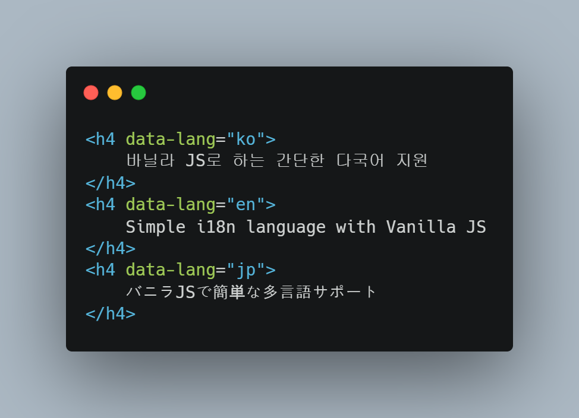
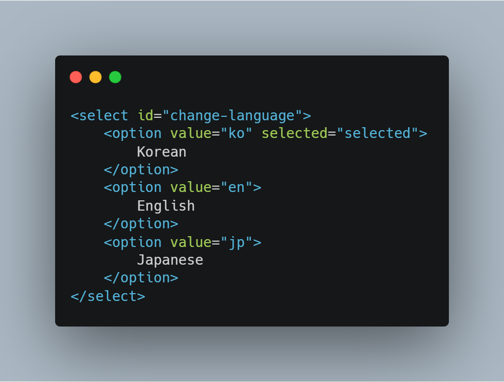
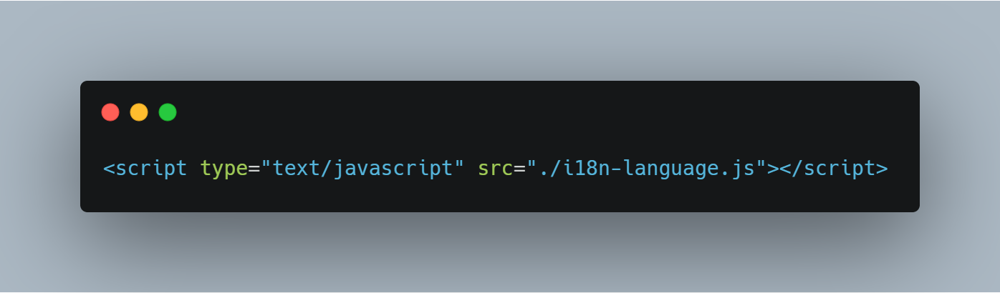
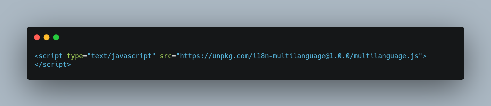

i18n-language.js
바닐라 JS로 하는 간단한 다국어 지원
Simple i18n language with Vanilla JS
バニラJSで簡単な多言語サポート
작성자: 신 현
Write by Hyun SHIN
Write by Hyun SHIN
언어:
Language:
言語:
Korean
English
Japanese
소개
Introduce
はじめに
이미 다양한 다국어 지원 방법이 있겠지만, 기존 수많은 방법들에 비해 이 프로젝트의 장점은 다음과 같다.
HTML에서 해당 텍스트가 나타나는 부분에 번역을 작성할 수 있다.
48줄로 구현된 간단한 JS 파일
HTML, CSS, JS만 사용되어 프론트엔드 입문자도 쉽게 사용 가능하다.
처음 방문시 브라우저 설정값으로 언어를 설정하고, 설정값이 없다면 영어를 우선으로 띄운다.
언어 변경시 Local Storage에 저장하여, 재방문시 해당 언어로 표기한다.
There are a lot of approaches to internationalisation, but this project offers unique advantages like: followings.
Inline translation in HTML documents
Lightweight JS implementation in 48 lines
Written in pure HTML/CSS/JS so beginners can use it easily
When visiting for the first time, the language is set as the browser setting value, and if there is no setting value, English is displayed first
When the language is changed, it is stored in the local storage and displayed in the corresponding language when revisiting
すでに様々な多言語サポートの方法があるが、従来の多数の方法に比べて、このプロジェクトの利点は、以下の通りである。
HTMLでテキストが表示される部分に翻訳を作成することができる。
48行実装されたシンプルなJSファイル
HTML、CSS、JSのみ使用されて、フロントエンド入門者でも容易に使用可能である。
最初の訪問時にブラウザの設定値に言語を設定し、設定値がない場合は、英語を優先的に浮かべる。
言語を変更する時Local Storageに保存して、再訪問時に、その言語で表記する。
사용법
Usage
使い方
HTML


JS
i18n-language.js를 다운로드하고 아래 코드를 작성한다.
Download i18n-language.js and write this code.
i18n-language.jsをダウンロードして、以下のコードを作成する。

다운로드하지 않고 링크로 사용하는 방법은 다음과 같다.
If you want use just link,
ダウンロードせずにリンクとして使用する方法は次のとおりである。

링크
Link
リンク
https://github.com/kyaryunha/i18n-language.js